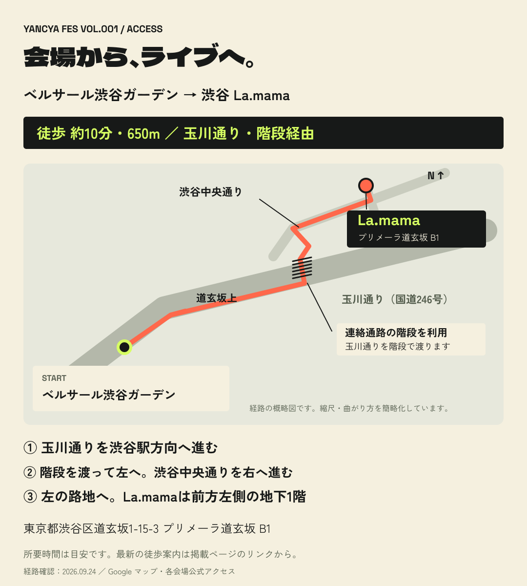

<!doctype html>
<html lang="ja">
<meta charset="utf-8">
<meta name="viewport" content="width=device-width,initial-scale=1">
<title>やんちゃフェス Vol.001｜2026.10.16 渋谷 La.mama</title>
<meta name="description" content="やんちゃフェス Vol.001。2026年10月16日、渋谷La.mama。2バンド＋6ソロ。入場無料、1D ¥700 または2D ¥1,100。">
<link rel="canonical" href="https://yancya.club/events/fes/001">
<meta property="og:type" content="website">
<meta property="og:title" content="やんちゃフェス Vol.001｜2026.10.16 渋谷 La.mama">
<meta property="og:url" content="https://yancya.club/events/fes/001">
<meta property="og:image" content="https://yancya.club/events/fes/001/flyer.png">
<meta name="twitter:card" content="summary_large_image">
<style>

*{box-sizing:border-box}body{margin:0;background:#171918;color:#f5f0df;font-family:system-ui,sans-serif}main{max-width:760px;margin:auto;padding:20px 16px 40px}img{display:block;width:100%;height:auto}a{color:#d6ff62;text-underline-offset:4px}.image{display:block;margin-bottom:24px}.route{display:block;background:#d6ff62;color:#171918;text-align:center;font-weight:700;padding:18px 12px;border-radius:6px;font-size:18px;text-decoration:none}.note{font-size:14px;line-height:1.8;color:#b9bcaf}.sr-only{position:absolute;width:1px;height:1px;overflow:hidden;clip-path:inset(50%)}nav{padding-bottom:20px}footer{margin-top:28px}
</style>
<main>
<nav><a href="https://yancya.club/events">イベント一覧へ</a></nav>
<h1 class="sr-only">やんちゃフェス Vol.001</h1>
<a class="image" href="flyer.png" aria-label="フライヤー画像を原寸で開く"></a>
<a class="route" style="margin-bottom:24px" href="https://premier.twitcasting.tv/c:shibuya_lamama/shopcart/457351" target="_blank" rel="noopener">ツイキャスプレミア配信 ¥2,000（アーカイブ2週間）↗</a>
<a class="image" href="access.png" aria-label="アクセス画像を原寸で開く"></a>
<a class="route" href="https://www.google.com/maps/dir/?api=1&amp;origin=35.6538781%2C139.6938606&amp;destination=35.6571678%2C139.697934&amp;travelmode=walking" target="_blank" rel="noopener">Google マップで徒歩ルートを開く ↗</a>
<p class="note">画像をタップすると原寸で表示できます。徒歩時間は目安です。経路には階段を含みます。</p>
<footer class="note"><a href="https://www.lamama.net/access/">La.mama公式アクセス</a></footer>
</main>
</html>
